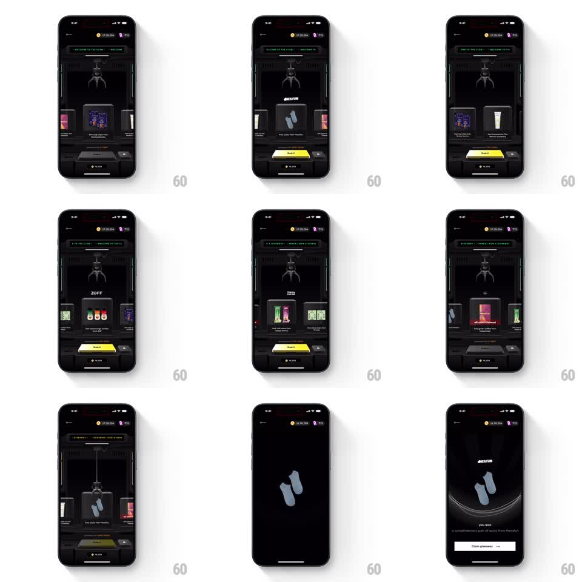

Media
Frame-by-frame

Rebuild this interaction 1:1: CRED's claw machine - a dark arcade cabinet with a swipeable prize shelf; drop the claw on your pick and it descends, grabs the prize, and the scene cuts to a 3D reward reveal.

Rebuild this interaction 1:1: CRED's claw machine - a dark arcade cabinet with a swipeable prize shelf; drop the claw on your pick and it descends, grabs the prize, and the scene cuts to a 3D reward reveal. ## Integration Integration: stack-agnostic spec - springs given as stiffness/damping, timed motions as duration + curve; map every value to your framework and animation library of choice. ## Scene Dark skeuomorphic claw machine: marquee text scrolling on top, a mechanical claw on a rail, a shelf of prize cards (socks, cans, collectibles) as a horizontal carousel, yellow "Drop it" button and a moves counter below. Then a black reveal stage: 3D prize rotating under a radial shine, "you won" copy, "Claim giveaway" button. ## Motion spec Pattern: arcade claw sequence -> reward reveal, ~4s. - Swipe the shelf: prize cards page left/right with momentum and snap (spring ~250/20); the centered card glows as the claw's target. - Tap Drop it: the claw rail centers over the target (300ms), the claw descends on its cable (600ms, ease-in), jaws clamp shut (150ms), and it rises with the prize hanging (500ms, slight sway). - Screen flashes dark; the reveal stage fades in: the prize rendered in 3D rotates slowly (~12s per turn) under a sweeping radial light, a curved floor reflection beneath. - "you won" + prize name fade in, then the Claim button slides up (spring ~350/22). ## Calibration - The claw's clamp happens exactly on contact - early clamping reads as scripted, late as broken. - The prize sways on the cable during the lift; rigid carrying kills the physics. ## Reduced motion Claw lowers and lifts without sway; cut directly to the static reveal (fade 300ms). ## Don't miss - The reveal prize must match the targeted card - the machine honoring your pick is the entire game. - The marquee ticker never stops scrolling, even mid-drop.